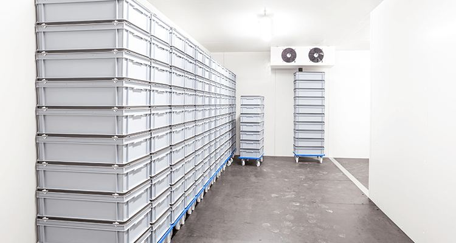

Pharmaceutical Cold Storage in Pakistan — GMP cold rooms and pharma warehouses for biologics, vaccines, and the full +25°C to −80°C spectrum
Izhar Foster designs and validates pharmaceutical cold storage across Pakistan — from +25°C ambient CRT pharma warehouses through +2/+8°C refrigerated cold rooms (the largest pharma class: vaccines, insulins, biologics, injectables) and down to −20°C deep-freeze and −80°C ultra-low. Every project ships with DQ/IQ/OQ/PQ documentation, WHO TRS 961 Annex 9 mapping, MKT excursion analysis, N+1 redundant Bitzer-based refrigeration, tamper-evident continuous data logging, and DRAP-audit-ready packages. Built since 1959 from a 277,460 sqft Lahore plant for pharma manufacturers, distributors, hospitals, and Pakistan's vaccine programs.

Pharmaceutical cold storage isn't a smaller version of food cold storage. It's a different engineering discipline — defined by tighter tolerances, redundant systems, and validated documentation that is non-negotiable in front of a DRAP auditor or an export-market QC team. A single excursion event on a single batch of vaccines, biologics, or temperature-sensitive injectables can cost more than the entire refrigeration plant. The economics of "good enough" don't apply.
Izhar Foster delivers pharmaceutical cold storage and cold room solutions across Pakistan for the full pharma temperature spectrum — from +25 °C ambient pharma warehousing, through +2/+8 °C refrigerated storage (the largest product class), down to −20 °C deep-frozen biologics and −70 to −80 °C ultra-low for mRNA vaccines and specialty biologics. Every room ships with the validated commissioning package your audit cycle and your insurer demand.
The five engineering requirements unique to pharma cold storage
What separates a pharmaceutical cold room from a commercial chiller comes down to five non-negotiables:
- Tighter temperature band. Commercial chillers operate at ±2 °C; pharmaceutical cold rooms hold ±0.5 °C across the entire validated working volume. Achieving that requires panel thickness one or two SKUs above commercial spec, evaporator design that prevents stratification, and air-distribution patterns mapped before commissioning.
- Continuous tamper-evident data-logging. Temperature must be logged at minute-or-better intervals, written to non-volatile media, and protected against alteration. Auditors look for unbroken records over 12+ months. Modern systems write to encrypted local storage plus cloud, with hashed records that can't be silently amended.
- N+1 redundant refrigeration (zero single points of failure). Two compressors, sized so the secondary alone carries the full load. Auto-transfer on primary failure inside 30 seconds. For high-value applications, N+2 (two backups) and dual independent refrigeration circuits.
- Validated commissioning (IQ / OQ / PQ). Installation Qualification documents that the equipment installed matches the design specification. Operational Qualification proves it operates within validated parameters. Performance Qualification proves it operates correctly with actual product loaded. None of these are optional for GMP-compliant operation.
- Power redundancy. UPS for monitoring and controls (so logging never gaps), plus a dedicated backup generator sized for the full refrigeration load with automatic transfer switch (ATS). Pakistani grid outages cannot become temperature excursions.
Temperature classes we deliver
| Class | Range | Typical product | Our spec |
|---|---|---|---|
| Ambient pharma | +15 → +25 °C | Tablets, capsules, most OTC | 75–100 mm panels, controlled humidity |
| Refrigerated (largest class) | +2 → +8 °C | Vaccines, biologics, insulins, many injectables | 100–125 mm panels, ±0.5 °C, N+1 |
| Deep-frozen biologics | −20 °C | Plasma, certain biologics, master cell banks | 125–150 mm panels, dual circuits |
| Ultra-low | −70 → −80 °C | mRNA vaccines, specialty biologics, research | 150–200 mm panels, cascade refrigeration, N+2 |
Sizing for any of these starts with the cold room heat load calculator — pharma applications particularly benefit from precise sizing because oversized refrigeration on a tight-band room cycles excessively and degrades temperature stability.
The validated commissioning workflow
Pharmaceutical cold storage commissioning follows a structured path that produces audit-ready documentation at every stage:
1. Design Qualification (DQ)
Before any equipment is ordered, the design itself is validated against the User Requirement Specification (URS). The DQ document captures the temperature class, redundancy requirements, capacity, validated working volume, controls philosophy, and alarm strategy. Auditors verify the design intent before installation begins.
2. Installation Qualification (IQ)
Once installed, the IQ confirms that what was actually installed matches the DQ — equipment serial numbers, refrigerant charge, panel manufacturer certificates, sensor calibration certificates, drawings as-built, electrical commissioning records.
3. Operational Qualification (OQ)
Equipment is run empty across its full operating envelope. We test refrigeration performance at design ambient, defrost cycle behaviour, alarm trigger thresholds, primary-to-backup compressor changeover time, controls response, and recovery time after door-open events. The OQ report typically runs 80–120 pages.
4. Performance Qualification (PQ) and mapping study
The room is loaded with product (or product simulant) and held under realistic operating conditions for 24–72 hours while temperature is logged at multiple validated sensor points. The thermal mapping study identifies hot spots, cold spots, and worst-case locations. The PQ report documents that the room maintains validated band uniformly across the loaded volume.
Re-qualification cadence
Most pharmaceutical operators re-qualify cold rooms annually through abbreviated mapping and OQ checks, with full PQ on a 3-year cycle or after any significant equipment change. We provide re-qualification services on existing rooms (ours and others') across Pakistan.
Mean Kinetic Temperature (MKT) in pharmaceutical cold storage
Mean Kinetic Temperature (MKT) is the single equivalent temperature that — if maintained for the same period — would produce the same degradation effect as a series of varying-temperature excursions. It is required by WHO TRS 961 Annex 9 for excursion assessment and is calculated using the Haynes equation (J. Pharm. Sci. 60(6), 1971):
TMKT = −ΔH ÷ R ÷ ln[(e−ΔH/RT₁ + e−ΔH/RT₂ + … + e−ΔH/RTₙ) ÷ n]
Where: ΔH = activation energy (typically 83.144 kJ/mol per ICH Q1E); R = 8.314 J/mol·K (gas constant); T₁…Tₙ = measured temperatures in Kelvin for each time interval; n = number of intervals. A correctly designed and operated +2/+8 °C cold room holds MKT below 8 °C across the entire storage period. Izhar Foster provides MKT calculation reports from continuous data-logger output as part of the PQ documentation package.
WHO PQS vaccine cold storage
The WHO Performance, Quality and Safety (PQS) catalogue (document E003) defines minimum performance requirements for refrigerators and freezers used in vaccine programmes — including cold rooms and walk-in cold rooms (WICR). For vaccine programmes in Pakistan, including the Expanded Programme on Immunisation (EPI) managed under the Ministry of National Health Services, cold room procurement must comply with WHO PQS E003 specifications. Key requirements in E003 for walk-in cold rooms: minimum hold-over time of 48 hours after loss of power (validated at maximum ambient), temperature uniformity within ±1 K at all measurement points, alarm activation within 30 minutes of temperature breach, remote alarm capable of alerting off-site staff. Izhar Foster designs and supplies WHO PQS-class cold rooms for vaccine storage and has supplied vaccine-chain infrastructure for USAID and Pakistan government programmes.
Temperature excursion response protocol
Under DRAP Good Storage and Distribution Practices (GSDP) — referenced in Statutory Regulatory Order (SRO) 150(I)/2016 — a written excursion response procedure is mandatory for licensed pharmaceutical storage facilities. An excursion is any deviation outside the validated storage band (e.g., above +8 °C for a +2/+8 °C room) for any recorded duration. The response protocol must include: (1) immediate notification to QA, with timestamp; (2) product quarantine pending MKT impact assessment; (3) MKT calculation using all logger data from the preceding storage period; (4) formal impact assessment by a qualified person — decision to release, retest, or destroy; (5) root-cause investigation and corrective and preventive action (CAPA) documentation; (6) update to the temperature deviation log; (7) regulatory notification if the deviation exceeds DRAP-specified thresholds for controlled drugs or vaccines. Izhar Foster provides a template excursion-response SOP as part of every IQ/OQ/PQ documentation pack — formatted to DRAP GSDP requirements and referencing the specific cold room serial number and sensor calibration records.
Pharma-specific design choices that matter
Beyond the documentation, the physical design of a pharmaceutical cold room differs in detail from a commercial cold store:
- Panel thickness one tier above commercial. Where a +4 °C dairy chiller might use 80 mm panels, a +2/+8 °C pharma room uses 100–125 mm to maintain band even during door-open events.
- Anti-microbial wall finishes and easy-clean coving. Where panel-to-floor and panel-to-ceiling joints meet, coved transitions allow proper cleaning. Wall finishes are food-grade or pharma-grade hygiene-rated.
- Sealed penetrations. Cable entries, refrigeration penetrations, drainage — all sealed with documented materials. Class compliance for cleanroom-adjacent applications is verified at handover.
- Run-and-standby evaporator coils. A second evaporator that takes over if the primary develops a fault. For high-value rooms, this is now standard.
- Dual independent temperature sensors. One drives controls, one drives alarms — neither can fail silently without alerting the operator.
- Heated frames on every door at any sub-ambient temperature — gasket integrity is the first thing to fail in a poorly-specified pharma installation. See insulated doors.
DRAP and Pakistani regulatory touchpoints
Pakistan's Drug Regulatory Authority (DRAP) operates under the Drug Act 1976 and the DRAP Act 2012. For pharmaceutical cold storage and warehousing, the applicable touchpoints are:
- DRAP Good Storage and Distribution Practices (GSDP) — temperature control, logging, validation, and re-qualification expectations
- WHO TRS 961 Annex 9 — model guidance on storage and transport of time-and-temperature-sensitive pharmaceutical products (TTSPPs), referenced by DRAP
- WHO TRS 957 Annex 5 — supplementary guidance on temperature mapping
- ISO 5149-1 — refrigerating systems and heat pumps, safety
- Pakistani GMP regulations — for facilities engaged in pharma manufacturing
For export-oriented pharmaceutical operators, additional standards apply depending on destination market — EU GDP, US FDA-FSMA, GCC GHC standards. Our documentation packages can be formatted to align with any of these on request.
What a DRAP auditor checks in your cold room
A DRAP inspection of pharmaceutical cold storage covers the following items in sequence. Prepare documentation for each before the audit date:
- Temperature band validation. The auditor reviews your PQ mapping report to confirm the validated working volume maintains ±0.5 °C across all sensor positions for the full product load.
- Data-logger calibration certificates. All temperature sensors must have traceable calibration certificates (PNAC-accredited or equivalent) dated within 12 months.
- Continuous data records. Unbroken logging at ≤5-minute intervals over the past 12 months. Gaps, missing data, or manual entries without authorised explanation are findings.
- Alarm and deviation log. Every alarm event must be logged with cause, duration, product impact assessment, and corrective action. Unrecorded excursions are critical observations.
- Equipment maintenance records. Compressor, condenser, evaporator, door gaskets. Predictive maintenance intervals documented and followed.
- SOP for temperature excursions. A written procedure stating what to do if temperature goes out of range — who is notified, how product is quarantined, who authorises release or destruction.
- Power redundancy test records. Documented annual (minimum) generator transfer test showing ATS activated within the specified time and refrigeration maintained through the event.
- Re-qualification status. Last full PQ date. Abbreviated mapping dates. Any significant equipment changes triggering re-qualification.
Izhar Foster's delivered commissioning package covers all 8 items at handover. Re-qualification services available annually.
Reference projects
From our portfolio of 2,100+ installations, the relevant pharma references include:
- Haier Laboratory Lahore. Validated laboratory cold room for climate-controlled product testing. IQ/OQ/PQ documentation package, precision temperature control. See case study →
- GMP Pharmaceutical Cold Room — Karachi. 600 m³ at +2/+8 °C, validated for vaccines and biologics, full IQ/OQ/PQ documentation package, N+1 refrigeration.
- Vaccine Distribution Cold Chain — Multan. Regional 1,200 m³ vaccine distribution hub at +2/+8 °C with redundant refrigeration and validated logging.
- Multiple smaller pharma cold rooms for hospital pharmacies, clinical-trial sites, and distributor warehouses across Pakistan.
Pharmaceutical cold storage — questions buyers ask first.
01What temperature do pharmaceutical cold storage rooms run at?
02What is GMP-compliant pharmaceutical cold storage in Pakistan?
03Do you provide IQ/OQ/PQ documentation for DRAP audits?
04How redundant should pharmaceutical refrigeration be?
05Can Izhar Foster build ultra-low (−80°C) freezer storage in Pakistan?
06What's the difference between pharmacy storage and pharmaceutical warehouse cold storage?
07How much does a pharmaceutical cold room cost in Pakistan?
08What's the lead time for a pharmaceutical cold storage build?
Want a rough cost estimate? Sales-engineer tool, ±20% band.
Sales-engineer tool that combines sizing with cost output. Editable Izhar margin line. Pakistan-tuned across 12 cities and 24 commodities. Pharma cold storage cost — DRAP-grade, validated, with N+1 redundant Bitzer refrigeration scope.
Open the rough estimator →Pharma cold-chain resources.
DRAP compliance guides, cold storage demand analysis, and cost benchmarks for pharmaceutical cold rooms.
Cold Storage Demand in Pakistan: Pharmaceutical Sector
Why pharmaceutical cold-chain gaps are the fastest-growing opportunity in Pakistan's cold-storage sector.
Cold Storage Cost in Pakistan 2026 — Pharma Cold Rooms
Indicative cost ranges for 2–8°C pharmaceutical cold rooms, temperature-mapping instrumentation, and validation.